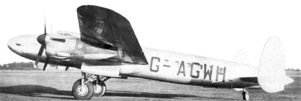
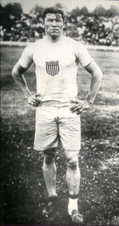

Star Dust was a British South American Airways (BSAA) Avro Lancastrian airliner which crashed into Mount Tupungato in the Argentine Andes on 2 August 1947, during a flight from Buenos Aires to Santiago, Chile. A comprehensive search of a wide area (including what is now known to have been the crash site) was fruitless, and the fate of the aircraft and occupants remained unknown for over 50 years. An investigation in 2000 determined the crash was caused by weather-related factors, but until then speculation had included theories of international intrigue, intercorporate sabotage and even abduction by aliens.
In the late 1990s, pieces of wreckage from the missing aircraft began to emerge from the glacial ice. It is now assumed that the crew became confused as to their exact location while flying at high altitudes through the (then poorly understood) jet stream. Mistakenly believing they had already cleared the mountain tops, they started their descent when they were in fact still behind cloud-covered peaks, and Star Dust crashed into Mount Tupungato, killing all aboard and burying itself in snow and ice.
The last word in Star Dust's final Morse code transmission to Santiago airport, "STENDEC", was received by the airport control tower four minutes prior to its planned landing and repeated twice; it has never been satisfactorily explained.
More Info: BSAA Star Dust incident (Wiki Link)Just a few years after the “Anatomy Murderers” Burke and Hare were apprehended in Edinburgh, two boys discovered these tiny dolls, each nested into a miniature coffin hidden away in the city park.
At first theories on the dolls' significance ranged from witchcraft to child’s toys, but eventually it began to seem that the 17 tiny figures could be effigies for the 17 murder victims a decade earlier.
Between 1827-1828 William Burke and William Hare lured in and murdered their lodgers in a scheme to provide fresh bodies to the local anatomy school. Dr. Robert Knox, a brilliant and well-known local anatomy lecturer, purchased the bodies and most likely knew that something was a bit suspicious about his supply chain.
More Info:
He is considered as one of the most versatile athletes of 20th century. He won olympic gold with record timing wearing only shoes that he picked up from garbage that did not fit him well, so he wore extra socks. It is widely regarded that he was discriminated because of his Indian-American ancestry.
More Info: Jim Thorpe (Wiki Link)